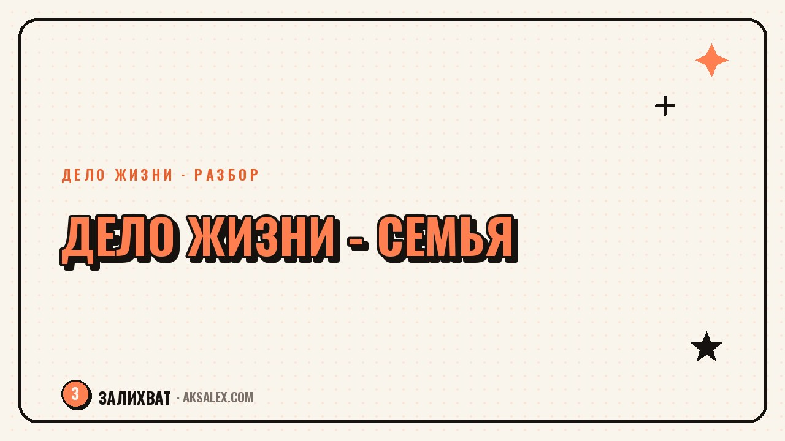

Можно ли назвать делом жизни заботу о семье, а не карьеру

Когда говорят про дело жизни, почти всегда имеют в виду что-то с результатом снаружи - бизнес, профессию, проект, который можно показать. А если твоя главная энергия уходит на дом, детей, стареющих родителей или на то, чтобы в семье был порядок и спокойствие - это как будто не считается. 'Ну это же быт' - говорят. Разберём честно, можно ли назвать заботу о семье делом жизни, и почему вопрос вообще стоит именно так.
Почему заботу о семье обычно не признают делом жизни
Дело жизни в нашей культуре почти всегда измеряется видимым результатом: продукт, доход, узнаваемость, карьерный рост. У заботы о семье результат другой - он не оформляется в портфолио и не показывается на собеседовании. Ребёнок вырос спокойным и уверенным, в доме держится атмосфера, где всем безопасно, пожилой родитель не чувствует себя брошенным - это огромная работа, но её не принято называть делом, потому что её не продать и не выставить в резюме.
Добавляется и то, что заботу о семье исторически считали 'естественной обязанностью', а не выбором и не призванием. Отсюда ощущение, что называть это делом жизни - как-то неловко, будто занижаешь планку. На деле же дело жизни определяется не формой (бизнес или дом), а тем, вкладываешь ли ты в это себя осознанно и получаешь ли смысл, а не только долг.
Признаки, что забота о семье для тебя именно дело, а не только обязанность
- Ты думаешь об этом не только как о рутине, а ищешь, как сделать лучше - читаешь, пробуешь новое, развиваешься в этом
- Тебе важен результат не только 'чтобы не упрекнули', а потому что ты видишь в нём ценность
- Ты готова(ов) защищать свой выбор перед другими, даже когда слышишь 'а когда вернёшься к карьере'
- В этом есть твои сильные стороны, а не только то, что 'должна была взять на себя'
Что мешает признать это делом жизни лично тебе
Часто мешает не внешнее мнение, а внутренний голос, который сравнивает заботу о семье с 'настоящей' карьерой и находит её менее значимой. Этот голос обычно взят не из своего опыта, а из среды: соцсетей, где дело жизни - это обязательно бизнес с оборотом, или из разговоров, где спрашивают 'а ты вообще кем работаешь' с явным смыслом, что забота о доме не ответ.
Полезное упражнение - написать себе честный список: что из заботы о семье ты выбрала(выбрал) сама(сам), а что делаешь по инерции или из вины. Если в списке много осознанного выбора - это говорит о деле жизни больше, чем любое внешнее признание.
Дело жизни - это не форма, а отношение. Можно годами 'строить карьеру' по инерции без смысла, и можно годами растить ребёнка или заботиться о родителе с полной осознанностью и чувством своего пути. Форма не определяет глубину.
Можно ли сочетать заботу о семье с другим делом
Вопрос часто ставят как выбор 'или-или', но на практике дело жизни не обязано быть одним на всю жизнь и не обязано исключать остальное. Забота о семье может быть основным делом на определённый период - пока дети маленькие, пока родителю нужна помощь - и это нормально менять со временем, без ощущения, что ты 'потерял себя' на этом этапе.
Как не терять себя, если забота о семье занимает почти всё время
- Оставляй себе маленький кусочек времени на то, что твоё и только твоё - даже 20 минут в день
- Называй вслух то, что делаешь, своим делом, а не 'тем, что надо'
- Фиксируй маленькие результаты - не для отчёта кому-то, а для себя
- Разреши себе менять формат заботы со временем, когда дети подрастут или ситуация изменится
Сравнение подходов к делу жизни
Полезно увидеть разницу между делом жизни, построенным на видимом результате, и делом жизни, построенным на заботе - не чтобы выбрать 'правильный' вариант, а чтобы честно понять, где ты сейчас и что тебе подходит.
| Параметр | Дело жизни как карьера/бизнес | Дело жизни как забота о семье |
|---|---|---|
| Видимый результат | Продукт, доход, признание | Атмосфера в доме, состояние близких |
| Как измерить | Цифры, отзывы, рост | Собственное ощущение и обратная связь от близких |
| Риск обесценивания | Низкий - общество признаёт сразу | Высокий - часто называют 'бытом' |
| Можно ли совмещать | Да, с заботой о семье в меньшем объёме | Да, с небольшим делом или хобби для себя |
Что делать, если хочется и того, и другого
Если ты чувствуешь, что забота о семье - твоё дело, но хочется ещё и чего-то своего снаружи, не нужно выбирать между 'предать семью' и 'предать себя'. Начни с малого: выдели себе один час в неделю на дело, которое интересно лично тебе, без цели сразу превратить его в доход. Задача на этом этапе - не построить бизнес, а вернуть себе ощущение, что у тебя есть что-то своё помимо заботы о других.
Спроси себя: если бы никто не оценивал мой выбор, что бы я назвала(назвал) своим делом прямо сейчас? Ответ часто оказывается честнее, чем все внешние ожидания вместе взятые.
Частые вопросы
Можно ли назвать заботу о семье делом жизни, если за неё не платят?
Да, дело жизни определяется не оплатой, а тем, вкладываешь ли ты в это себя осознанно и находишь ли в этом смысл. Отсутствие дохода не делает заботу менее значимой, её только сложнее измерить привычными мерками.
Как понять, что забота о семье - твоё дело, а не обязанность по инерции?
Обрати внимание, ищешь ли ты в этом способы сделать лучше и готова(ов) ли защищать свой выбор перед другими. Если в заботе есть твои сильные стороны и осознанный выбор, а не только долг - это ближе к делу жизни, чем к рутине.
Нужно ли обязательно вернуться к карьере после периода заботы о семье?
Нет, это личный выбор, а не обязательство. Дело жизни может меняться со временем вместе с обстоятельствами, и возвращение к прежней карьере - не единственный правильный путь.
Как не потерять себя, если забота о семье занимает всё время?
Старайся оставлять себе хотя бы немного времени на то, что твоё - даже короткое занятие в день. Называй это своим делом вслух и фиксируй маленькие результаты для себя, а не для чужой оценки.
Можно ли совмещать заботу о семье с собственным небольшим делом?
Да, и начинать стоит с малого - один час в неделю на что-то своё без цели сразу превратить это в доход. Это помогает сохранить ощущение своего пути, не предавая ни семью, ни себя.
Раз тема оказалась полезной, вот что почитать следующим. Нейросети для финансового консультанта: отчёты, планы и ответы клиентам без лишней рутины.
Читать статью →а не вручную